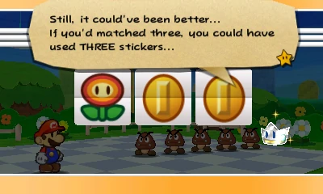

I'm not accusing you but repeat after me regardless. We are NOT gonna be that guy!
Paper Mario is a RPG or turn-based adventure spinoff of the Mario franchise, starting on the Nintendo 64 in 2001. To this day every entry introduces new settings, characters, and mechanics- often to much derision from fans. The original controversial entry is not Sticker Star from 2012, but Super Paper Mario on Wii, coming out in 2007. This article will discuss reasons I think this platformer RPG hybrid is often unfairly treated in comparison to the games preceding and succeeding it.
1.Story, Characters, and themeing: Part of the appeal of Paper Mario among fans is that the games give Mario more fleshed out stories and characters. The point here is not to go on and on whether or not Mario needs original characters sharing the space or taking the spotlight (depending on how you feel about them), but I will point out that Super Paper Mario easily fits right in with the preceding games. Here Mario and a few other main characters are stuck in an alternate dimension separate from the Mushroom Kingdom with new characters and a new league of villains with their own quirks. There is again a prophecy type backstory that connects the main cast. Interestingly, there are expies of returning characters like Merlon, Merlee, etc, a neat bit.
Theme wise all early Paper Mario games had elements of fantasy to them. More fantasy than normal I mean, as Mario's world is pretty zany even in a bog-standard game. Paper Mario is a Bowser kidnap Peach story but it has the Star Spirits and the concept of wishes. The Thousand Year Door is a Peach kidnap tale as well only not from Bowser and it has the Crystal Stars, the ancient lore of Rogueport, plus the Shadow Queen, plus the Four Heroes, plus well...there's quite a bit there. Super Paper Mario starts out with a wedding.. Count Bleck marries Bowser to Princess Peach and it's all down from there. I will not retell the story but it involves love, loss, manipulation, and a plethora of other serious topics culminating in a void that will end all worlds if you don't stop it. It's not perfect but effort was put into it and that it aligns with the first two games in that regard.

2.Partners! SPM has plenty, at least mechanically. There are twelve in a half unique pixels that can do some of the basic utility functions previous Paper Mario partners had. They are "a type of fairy" Tippi will tell you at some point. They do various tasks: revealing objects, blowing up, making your character invulnerable while motionless, making Mario move quicker, etc. Some abilities are brand new. Like other games its a gender mixed group, except not so obvious so by design. Not always name either if you're daft like me! Let's break it down:
So to conclude, Super Paper Mario reuses some old abilities but adds a few more. Abilities never used: No one shoots a shell out like Kooper or Koops. No one allows swimming like Sushie. Justified because in this game Mario and co can swim naively. Additionally Peach, Bowser, and Luigi add their own skills to the mix. Luigi's jump is a copy of a boot upgrade. Bowser's abilities are from his post Chapter cutscenes in TTYD. Peach hovers like Parakarry or Yoshi might let you.

Is this fair? Yes and no. (click for bigger)
3. Hub worlds and chapters: Flipside/Flopside has the 'classic' Paper Mario commonalities, an inn, NPCs, areas to explore that gradually open up, shops, and portals to the chapter levels. The levels all have lore behind them, helped out somewhat by the locations being removed from the Mushroom Kingdom. In the worlds there are sometimes towns within the ‘Chapters’, smaller hubs. These have less going on compared to previous games due to the 2-D perspective, but they exist.
4. The shops, places to make recipes, badges or equivalents.: What would an RPG be without some sort of shop system? There are several in all three of the first games, each selling different things at different costs and accepting buybacks at various rates. Initially you can cook with a single item but then the player is allowed to combine items for more complex recipes. There are two cooks with different catalogs, Saffron and Dyllis. As in PM64 and TTYD there is some work involved filling out all recipes for max completion. SPM lacks badges, but the collectible Catch Cards are a near equivalent. In addition of behaving as a bestiary they make you do extra damage on the enemy.

What games are missing here?
5. The Pit of 100 trails and other challenges: Super Paper Mario includes this from TTYD with it’s own spin. The developers were so proud you have to play it up to three times. Instead of being locked in a room with a single enemy (as it appears on the field) to defeat before moving, the player is dunked into a dungeon with varying amounts of foes. One of them has the key needed to escape and you are timed on the floor. At the mercy of randomness but exciting nonetheless, the key could be within the very first or very last enemy defeated. The harder Flopside version introduces 'dark' enemies who are only silhouettes. Unlike TTYD's version, there's no foreboding or dreadful feel the deeper you get and the boss(es) are a let down. There is a similar in principle Sammer challenge, very strenuous and repetitive but offering reward.

Pictured: Two 'fearsome' enemies the TTYD/SPM Pit of 100 Trials throws at ya
6. Unique bosses: The first two games have unique characters as the bosses that are more than just ‘enemy' but bigger. (Though they are often big enemies.) There are some repeat battles in both but for the most part they change it up enough or at the very least feel progressively harder. Super Paper Mario also has its slew of bad guys but unfortunately doesn't do so well with the repeat fights. Some are justified because they are Count Bleck's mooks, but they outnumber original boss fights in the game. The game doesn't make them feel like fresh battles and if it is someone unique, they feel like a clone of a previous boss. Ultimate they get credit however.
7. Action Commands and RPG mechanics: In Paper Mario the player is greatly encouraged to use to button inputs to increase the effectiveness (or have any effect at all) when executing a move in battle. Super Paper Mario is in real time but items can require these by pressing something or shaking the remote. 'Stylish' moves can be executed after jumping on enemies. Some paper cut out audience members will pop on screen just for a visual effect.

Where are their helmets?
Moving on, HP and ATTK carry over and increase from points leveling up. That's your 'experience'. Defense doesn't really however.. Mario can flip to 3-D as a selling point. A lot of puzzles just come down to flipping so that's all we'll say about that. Despite this, we can see the attempt to adapt old Paper Mario customs to the new type of game SPM was.
7. Enemies and tattle log system: SPM has an eclectic bunch. Like previous games foes have different colored variants with the most elite enemy that's entirely blacked out. The Mario enemies are a bit basic and related directly to Bowser as they have been brainwashed by Bleck (also indicated by the sun glasses on koopas). The native Flopside enemies are colorful and diverse but hit and miss. I appreciate some being abstract and interesting, but many are a little too out there for for typical Mario fan.
If there is an area Super Paper Mario does not skimp on it is the Paper Mario bestiary. Tippi gives information by tattling but so do Catch Cards that you collect for every enemy and even NPCs. The catch card entry differs from Tippi's commentary. Collecting all of the cards is a mighty task but they throw in characters from previous Paper Mario games as cameos.

The only Toad in the game. This statement would never be uttered again for any future Paper Mario.
0. Music: I didn't know where to place this because my opinion is all over the place regarding Paper Mario's music. I think the series has some hits, especially in the first game which is stronger even than TTYD to me in the music department. SPM is overall okay but I am not moved by much of it either. Flopside's town music sure drones and gets in your head, but not quite like Rogueport. A few songs annoy me a little however: the theme songs of pixels joining you, the mellow one that plays during an important story part, and a couple of other things. Now if my opinion of SPM music is mostly okay, why didn't I give it a number on the list? Because this is one area where successors actually improve. It is often said that one redeeming factor of those games is their great soundtracks and I'm afraid I have to agree..

Designed for post SPM games. Is it fair? Again.. Yes and no.
Super Paper Mario is oft blamed for what happens next with the franchise and there bits of truth in that. It removed Mario and co out of their natural elements and pulled a 'story over gameplay' move that wasn't going to go down well to a lot of Mario fans. I won't go into how there was a back and forth with Miyamoto over if there needed to be a story from that point on or the results of a Club Nintendo poll. Instead we're going to give credit to Sticker Star and Color Splash and 2020's Origami King where due. Let's evaluate them by the same criteria:

Dear Mario...bring a palette for this new adventure. We redecorated your house for the third time too.
1. Story, Characters, and theming: Sticker Star is infamous for its dry plot and cast. Is that reputation justified? There is a Sticker Fest happening, a completely new event with no background until now. Bowser is able to somehow sneak up to the Sticker Comet that grants wishes. (A lot of things in Mario's world does this it seems.) The comet breaks into Royal Stickers that scatter the land and inadvertently create bosses you'll have to fight later. Kersti is the caretaker of these Royal Stickers and she becomes your supporting protagonist for the adventure. She has a strong personality and will even butt heads with Mario though she always comes around. While Bowser and Peach are off in a castle you face several foes that were under normal circumstances typical but become powerful shiny stickers with lots of HP once they get a hold of that Royal Sticker. Bowser Jr and Kamek appear to torture you as well when they can. There aren't man OCs or at least named ones, and what little we get is restricted to a few levels. They are a lot of disproportionately similar looking toads. The themes are a little New Super Mario Bros-ish as some may criticize and veer more on the regular fantastical Mario settings rather than the more fantasy settings from before. For instance, there is no talk of prophecy here nor backstory, even in a few spots where you think there would be. The closest we get is the fact that in this game only (as you'll see) the people (or toads at least) of Mario's world have no clue what non-paper real-world objects are. That's why they're 'Things'. Maybe it's meant to be a gag for reading the museum entries but this conflicts with world building, as characters like Goombella from TTYD exist still.. 
Listen, I'm trying to defend you here but you're making it tough..
Contrary to popular belief, the thing I'm going to defend the most here is.. Kersti! But just a little. Her treatment of Mario can be snappy and she is too quick to run her mouth but she does realize she is wrong and a flawed character is fine. Wait, let me explain! My theory has always been that her fan backlash was more harsh because she is the only companion. In a colorful cast to balance out her attitude I don't think nearly as many would find fault with her. It's okay for someone to not kiss Mario's feet constantly is where I'm getting at, and she's intentionally a more reserved and dignified (at least in her opinion) character. What's not okay is that her ability to give hints is lacking with some of the guessing game puzzles here. More on her abilities below.
Now Color Splash: This game is in many ways a direct response to issues fans had in Sticker Star. You can see it in almost every area. Almost. The story starts with what I feel is an allusion to TTYD. Mario has a strange letter pointing to the new hub we'll discuss in a later point, Port Prisma. The plot revolves around paint, something the world of paper needs to function. Bowser mixed up the paint at the Prisma Fountain and created Black Paint, the true boss of this game. Now the Bowser minions are effectively working for it as it has Bowser under its control. A few issues here. The Black Paint is a corrosive but also possessive force we never see the scope of fully. They didn't want to give us generic enemies but they didn't want to create new characters so they pulled from already established main series villains. Consequently have Koopalings as main bosses. It's fully subjective but I didn't feel their characterization was always on point or that their locations made sense. A lot of NPCs are still toads but more character is put into them and some have slightly distinguishable designs plus there's a few friendly enemy species NPCs there and there. Your partner Huey is enthusiastic to work with you and does basically nothing that would make you hate him they made sure. The world of Color Splash plays heavily on paper like Sticker Star but with some more tricks up its sleeve. Overall the environments are lively and exciting and the game has an overall jovial and comedic theme based on the absurdity of a paper world. YMMV on if you like that. Some players may find it funny or others may find it annoying when previous games were less on the nose with it.
Origami King: Doesn't mess around. The world being paper is a major plot point and not in a joking context. Even the fact that there are lots of toads is a major plot point. King Olly wants to make the world origami and we learn early story that if you are 'folded and reborn' there's no going back. This is later proven false, but the gravity and the urgency of the situation is enforced heavily from the beginning. The twist of course is that King Olly himself was folded to life by someone, a toad craftsman that he hates so much he wishes to destroy every toad in existence. Serious stuff. Because the familiar Toad Town is our hub the worlds and themeing a little more down to Earth but still exciting to explore. The characters are excellent while keeping with new school Paper Mario restraints. King Olly is a good villain with backstory and motivation even if short and sweet and Olivia is a pleasant companion. Both have a mystery behind them until it's revealed halfway through the adventure. Having the antagonist and your companion being brother and sister I felt also gave it a different angle. One is remorseless to the other and one is convinced till the end she can reason with him. Any NPC character not folded is on your side so there a plethora of various characters, toad and enemy species alike to speak to you in this game. They even have unique appearances at times. There are humorous parts but not as much as Color Splash. Partners return with a twist we'll cover below. You may even cry at times with this game!

In spirit sure, but..
2. Partners: If you look at beta material like here Mario Wiki link there may have been battle partner(s) for Mario at least on a rudimentary level. In the end we have Kersti who allows Mario to use a Battle Spinner, giving you extra moves for your single turn as Mario and the paperization. There you use a sticker on the world and if its the correct sticker or 'type' of sticker depending on puzzle, it will become a real 3D Thing object. She also gives hints like your Goombario/Goombella/Tippi would of the past. Her hints are subject to some criticism. Apparently she keeps track of how many stickers you use/waste to defeat a boss. If you don't do so optimally, she'll comment on it. Other times she may give hint or may not in certain sections of the game.
Huey is tied to the Mini Paint Stars the way Kersti was to the stickers. He teaches Mario how to battle with the cards that replace stickers and allows usage of the Paint Hammer. Plot wise he can absorb large amounts of paint and physically hold, or attempt to hold Mario's body. Lastly, he can give hints and lets you wring out Thing objects to turn them into cards. Because Color Splash's structure is less Thing Sticker puzzle solving oriented like Sticker Star, faults with his ability to give hints don't come up much. So the paint can dodges that bullet... On a curious note: Huey is a normal non-paper 3D object when you first meet him. He then makes himself paper. That means.. nothing. Just thought it was cool. The Rescue Toad Squad occasionally help you out throughout the game but you don't directly control them.
Olivia in Origami King lets you use the Magic Circles and 1000-Fold Arms technique either on field or in battle. She can also transform into four Vellumentals after you defeat them. You can throw confetti to cover holes in the universe. Lastly, she gives hints. There's a similar thing to Color Splash in that due to the game's structure you won't need a lot of outside help. What you are to do is always revealed in the game whether via Olivia or NPCs or hints lying on the battle stage ground. -But if you needed a hint I always found her helpful. You have partners in battle. Bob-omb (Bobby), Spike, Bone Goomba, Professor Toad, Kamek, Bowser Jr, and Bowser will at some point(s) accompany you. You cannot directly control them but they all do effective damage and there is an item to equip to increase their effectiveness. Of course this is not to be confused with the classic partner system. Aside from Professor Toad they don't have field abilities. There are other characters that will accompany or help Mario at various points. You wish the partners would stick around longer but it was a step in a better direction.
Paper Mario or New Super Mario Bros? Look close.
3. Hub Worlds: Sticker Star's Decalburg has an item shop, the Sticker Festival stage that you can’t do much with, the area where you convert things into stickers, and a good tune. Port Prisma offers a little more ostensibly but it’s still not that much going on aside from vaguely calling to mind the layout of Rogueport. There are similar things, the museum, a battle training place, a place to get your thing cards, a shop... The only residents are the Toads and the size feels smaller. Being fair these two games work on a level select map system. The hub town does not connect anything. In Origami King however Toad Town does connect all the worlds like a classic Paper Mario game. There is no level select and you use shortcuts via pipes. Again there is a shop, museum, training area, and regular citizens living around, this time not only toads!
4. The shops, places to make recipes, badges, or equivalents: Sticker Star, Color Splash, and Origami King have shops, but are they equal? In Sticker Star the item shops are quickly made almost obsolete by the sheer amount of stickers you find in the battle field for free. Prisma Cardware is a similar thing, a shop with basic cards you might not need. In Origami King you do not have a consumable system but your extra weapons do degrade and you may be tempted to occasionally buy something. Still a lot of what you want you can get for free. Now there was a lot of shopping you didn't have to do in the earlier games either depending on your play style so this is fine.. In Origami King there are accessories that work like badges. You can have multiple enabled in various categories that increase health during battle, add to the battle timer, alert you to secrets, or do cosmetic things. Just like the good ol days. These must be bought along with some treasures so some money must be spent here. None of these three games have any recipe system. It will be missed or not depending on you.
All three games have a museum to somewhat act as a bestiary and also be a place for collectibles, art extras, and soundtracks. In Sticker Star this is your only source to estimate the damage values and attributes of some of the thing stickers. There is an enemy and music gallery as well. For some reason you are charged and given limited time to eavesdrop on those basic old enemies! The stickers are separated by category but they made the room very large inexplicably. The sticker entries are sometimes a gag, so you may wonder what stickers actually do. Color Splash fixes that with the Prisma Museum. The Battle Cards are stored here and there is now an art gallery to accompany the sound gallery. Cleaner presentation overall but no concrete numbers like there should be on damage output, health, etc. The Musée Champignon is in Toad Town in Origami King. Hmm but there are no stickers here so what do you donate? Nothing. You unlock additions rather. Toad points unlock art. You gain treasures and they are automatically added. You catch fish and that record is added. You fight enemies in each area and that's added. You complete objectives and gain the trophies. Easy simple clean.
5. The Pit of 100 trails and other challenges: Sticker Star and Color Splash had a prime opportunity for this sort of challenge since their battle systems depended on inventory management, too bad. I guess we can count Snifit or Whiffit as their extra challenges though they are more trivia based rather than battle in a dungeon based like a proper Pit of 100 trials would be. Origami King has a boss rush mode where they regulate your health and items. The Battle Lab also has modes challenging you with handling the battle field rings. That's as close as they get.
Does it make sense? No. Is it awesome? Yes. Fun elements like this cannot be denied with the new games, but we can't forget that this was always a part of the series either..
6. Unique bosses: In Sticker Star your enemies are main series or a larger regular enemy. There are still some neat things that happen in the fights however. Fights are creative if gimmick based. You play by the rules and exploit their weakness or you are in a world of hurt. The main bosses have unusual defense against normal attacks to encouraged you to use Thing stickers. Once you do use the weakness sticker it is a cake walk so difficulty is unbalanced. There is backstory very briefly if 'this person has a sticker crown land near them' counts. Your final fight with Bowser has multiple stages, including the Paper Mario signature 'the boss in invulnerable until a cut scene and then you can hurt them again' phase. Kind of impressive they kept that tradition. It's too bad there is no final level, just a carpeted hallway with Kamek in your way very briefly.
In Color Splash you have main series Koopalings, love it or hate it. Some of their placements on the map are subjective at best but the fights are fun if mindless because the thing sticker to use against them is required and made extremely obvious. I make more points on this on a page here. The other real boss is the Black Paint, created when all the normal paint colors accidentally mix. Already not the best backstory. While possessing Bowser it sounds very impersonal and flat. For some reason no regular Bowser minion has issue with their King being possessed. At one point it impressively levels a large area, but Huey fixes that rather quickly so maybe not so much.. The final fight is entertaining, playing with the concept of how much paint you are knocking off of Bowser. I don't care for the fact that at the final phase of the fight lasts for a finite time and then it's game over.
In Origami King they step it up with the Legion of Stationery. These characters effectively hold godlike power over mere paper beings. All have a unique personality you may find surprising for office supplies. They can use their power to warp the paper world from scribbling all over it childishly to stamping your brains out disturbingly and slicing you in half brutally. Watch out. There are also the Vellumental fights, elemental deity forces. Residing in temples they don't have much character as they are animals. Of note here is that they have gimmicks but not tied to what items you possess. Rather you must strategically do certain attacks at certain phases of the fight. This can cause some players a lot of trouble but at the very least what you need to defeat a boss you always possess. There are real time battles with slightly freaky soulless entities called Paper Macho Soldiers. You attack them with your hammer to knock the paper off of their skeletal like frames. One such is made out of the dismembered faces of your friends. Eek! The King Olly fight plays with familiar concepts except for a few parts involving motion controls that may fluster you the first time. It has a time limit too at some sections. I think Origami King is closest to classic games in this area, but if you don't mind main series characters I suppose Color Splash is okay as well.
7. Action Commands and RPG mechanics: In all three games action commands are reduced to the most rudimentary level where you press A. In Sticker Star only Mario is on the field. He has one action unless out complete the Battle Spinner where you can use two or three more stickers. You automatically attack the first enemy on field. You cannot select otherwise. Your stickers are arranged in you album on the bottom screen. Your pages increase after defeating a main boss. Stickers have a single action per sticker. There are various qualities such as being shiny or flashy that makes it stronger. A larger sticker is stronger too but physically takes up space in your album. If a sticker is unused at the end of the battle but you stuck it up for usage it's wasted. Stickers either attack or do something defensive for you. You are rewarded for clearing all enemies in your first turn. You may defend against an enemy attack by hitting A but there is no super guard so if you leave an enemy standing there's no avoiding damage. You can flee a fight by spamming A or using a secret door item. Enemies have their health bar combined but eventually you can do some mental calculations. There are status effects here like poison or soggy or crumpled but the game goes out of its way to not explain this stuff. That's... it!
In Color Splash you use cards in place of stickers. Some cards now have more than one use and a card being painted or not affects to damage output. They have similar attributes but always take up the same space in your album. How many you can use will increase as the game progresses. There are enemy stickers that create a temporary partner to fight for you but these don't work with bosses. Thing cards behave like before. Again you can defend with A and attempt to flee a battle, maybe. The compass item will ensure this. Enemies now lose their color to indicate health. Takes a bit to get used to. I'd prefer to just have a number, wouldn't you? A lot of the previous status effects return.
In Origami King uses a timed ring system in front of a live audience. At the start of normal battles Mario is in the center and the enemies are in predetermined spots on the outside rings. You have a set amount of moves to arrange them correctly. You have hammer and jump by default and you equip stronger boots and hammers as weapons that degrade by usage. You also have items like mushrooms and fire flowers on a separate menu. You have one action unless (in boss fights) you arrange the field to land over a panel that gives you an extra turn. You arrange the rings with enemies correctly and you gain extra damage output. In a boss fight you are outside the ring and the boss is in the center. You then arrange a path to the boss while crossing necessary panels that will allow you to use the right attack. Even the angle in which you approach the boss can matter. Various boss fights bring new gimmicks and hazards to the battle stage. The final fight with King Olly also has unique characteristics, if a bit sudden. You can flee battles, or ask Olivia a question (which pauses the timer), pay for more time to complete the puzzle, or pay coins for your toad audience to help. They may arrange the panels for you, damage enemies, or toss health on stage. Battle accessories can give you free health, increase the amount of time you have, and increase your defense. You see the health of bosses but not enemies but they will physically indicate low health. We don't have the traditional status effects but some enemies can mess you with nonetheless.
0. Music and conclusions: I'll make this as short as the other section. Sticker Star has a nice jazzy theme I can imagine even after not playing it in a good while. Music is a strong point there. Color Splash and Origami King also has some nice hits. I hope I've proven that even if you dislike modern Paper Mario there are at minimum slivers of good in them. Sticker Star does cut the experience down I admit. Just view it as a short portable romp and everyone, even Nintendo realized it was too bare. It's not the sole reason Paper Mario changed. Research will show that it was inevitable as it started early in development as a more traditional game but was changed to what we have now. There is at least some fun self imposed challenge potential if you don't use thing stickers. Color Splash is a more complete game and does the consumable battle system about as well as it can be done. It has lots of funny moments and is beautiful to look at and a genuinely fun if not hugely impactful experience overall. Origami King gives us a more nuanced if short adventure I feel with better more grounded characters and plenty of emotional moments. Partners and a move away from card/sticker battling are other features that may attract old school fans. The puzzle ring battle system isn't for everyone but the way they handled world building and incorporated the world of paper into the plot puts it above the others in my opinion.

See ya! Just avoiding the flames!
-Comparing Thing stickers in Sticker Star and Color Splash
-Unexpected ways in which Sticker Star is better than Color Splash
-Dark elements in Sticker Star (humor)
-Character design in Paper Mario
-Something mundane but odd taken out of new Paper Mario games